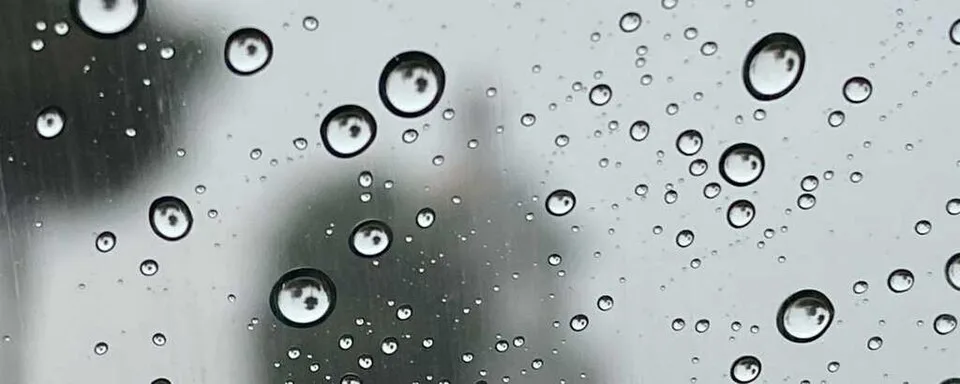

Window Raindrop Follow
Real rain on a real window: pick one drop at the top, put your finger beside it on the glass, and follow it all the way down.
Before you begin
- Ages
- 3–3
- Group
- 2–12 kids
- Time
- 10–15 min
- Where
- Indoors
- Prep
- Some prep needed

Setup
This activity cannot be faked and should not be: it needs a rainy day and a window the rain actually hits, low enough for a three-year-old to reach the top of the glass. Stand there yourself first and watch one drop make the whole trip, if the rain is too light to run today, say so and save the activity; a window of still drops is a different, shorter look, not this.
Materials
- a window at kid height with real rain running down the outside
- a stool or step for shorter kids (adult-placed)
- a dry cloth (for wet fingers and fogged spots)
Steps
- Gather the group at the window and watch together for a moment before any fingers go up: drops landing, sitting, then suddenly sliding. Say the plain fact the whole activity hangs on: 'A drop slides when it gets heavy enough. Watch. It will take other drops with it.'
- State the one job: 'Pick a drop near the top. Finger BESIDE it, on our side of the glass. Follow your drop down.' Model it once with your own finger riding beside a sliding drop, slow enough for the group to track.
- Following round: each kid picks a drop and rides a finger down beside it. Drops will merge mid-slide, when yours joins a bigger drop, say so out loud: 'My drop got bigger!', because merging is not losing your drop, it is what rain does, and the group will report every merge like news.
- Race-that-isn't round: two kids pick two drops side by side and follow both. One will win; nobody chose the weather, so the result belongs to the rain. Name that plainly, because this is the rare race where the loser did nothing wrong and everyone can see it.
- Finish when the rain eases or the window runs dry of runners: count together how many drops the group followed all the way to the bottom, the number is whatever it is, then the cloth wipes the fingerprints off the glass, because the next rainy day deserves a clean window.
Variations
Easier: The adult picks the drop and every finger follows the SAME one together. One shared drop, no choosing, still a full follow when it slides.
Harder: Follow a drop with your eyes only, hands in laps, and call 'now!' at the exact moment it starts to slide. Watching for the start is the harder skill.
Safety
Fingers stay on the inside glass, flat and gentle, no banging, no leaning body weight on the pane, and stools are placed and held by an adult, never climbed mid-game. The window stays shut whatever the weather is doing; the rain is watched, not let in. If thunder starts, the group leaves the window. Storm watching is not this activity.
Source: Wikipedia: Drop (liquid)
Tried this? Rate it
Your ratings live in this browser only. Nobody else can see them. There are no community ratings here; every star on this card is yours.
Rate this activity, add a note, or write a reflection
Quick reflection
Optional, saved with your rating, and exported with "Copy my week".
Full activity card,